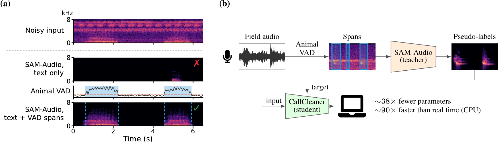
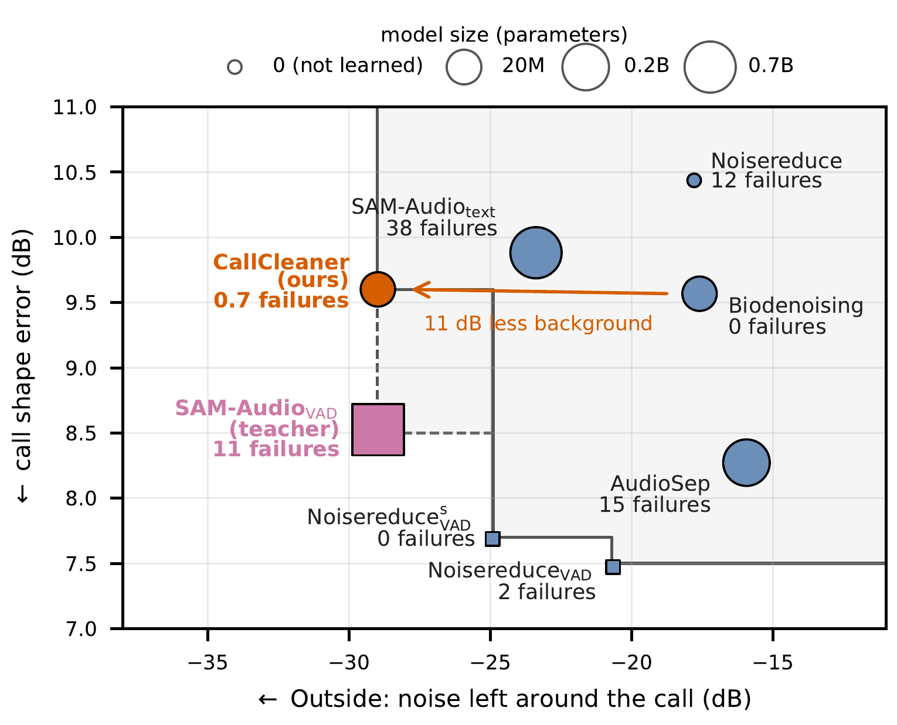

CallCleaner
Lightweight Bioacoustic Denoising from an Audio Foundation Model
1University of California, Berkeley, USA · 2Project CETI, USA and Dominica · 3University of Miami, USA
TL;DR: Prompted with call time spans from a simple animal detector, the audio foundation model SAM-Audio removes more background noise from animal vocalizations than dedicated denoisers. We distill it into CallCleaner, a 19M-parameter denoiser that needs no detector and runs ~90× faster than real time on a laptop CPU.

Abstract
Many studies of animal vocalizations require clean recordings, but animals are usually recorded in the field, with background noise from weather, vehicles, and other animals. Animal vocalization denoising is challenged by the scarcity of clean training data and the extreme diversity of animal vocalizations.
Audio Examples
Clean animal calls mixed with real field noise at 0 dB SNR, from the Biodenoising benchmark. Click a spectrogram to play it (click again to pause; click elsewhere on it to jump). Each version is peak-normalized; spectrograms span 0–8 kHz, with colors relative to each clip’s loudest point. Examples were chosen for variety of animals and noise, and for open licenses.
Results

Benchmark medians over 47 clips × 4 SNRs. Lower is better on both axes; marker size grows with model size. Dashed: Pareto frontier over all systems; solid: over systems that run faster than real time on a laptop CPU.
Citation
@article{xie2026callcleaner,
title = {CallCleaner: Lightweight Bioacoustic Denoising from an Audio Foundation Model},
author = {Michael Xie and Ga{\v{s}}per Begu{\v{s}} and Morris Alper},
year = {2026},
eprint = {2611.11491},
archivePrefix = {arXiv}
}
Audio credits
Mixtures from the Biodenoising benchmark (Miron et al., ICASSP 2025; for educational, non-commercial use). Original recordings from freesound.org; outputs are derivatives of these mixtures.